- ស្រាយបញ្ជាក់ទ្រឹស្តីបទពីតាក័រ
- គណនារង្វាស់ជ្រុងនៃត្រីកោណកែង
- អនុវត្តទ្រឹស្តីបទពីតាក័រក្នុងជីវភាពរស់នៅ ។
1. ទ្រឹស្តីបទពីតាក័រ
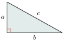
គេឱ្យត្រីកោណកែងមួយដែលមានរង្វាស់ \(\displaystyle a\), \(\displaystyle b\), \(\displaystyle c\) ។ \(\displaystyle a\) និង \(\displaystyle b\) ជារង្វាស់នៃជ្រុងមុំកែង និង \(\displaystyle c\) ជាអ៊ីប៉ូតេនុស ។ គេនឹងស្រាយបញ្ជាក់ថា \(\displaystyle c^2 = a^2 + b^2\)
សម្រាយបញ្ជាក់ ៖ គេយកត្រីកោណកែងបួនដូចគ្នាខាងលើមកផ្គុំបង្កើតជាការេមួយដែលមានរង្វាស់ជ្រុង \(\displaystyle (a+b)\) ឯកតាប្រវែងដូចរូបខាងស្ដាំ ។
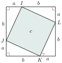
▶ មើលរូបមានចលនា៖ សម្រាយបញ្ជាក់ទ្រឹស្តីបទពីតាក័រ
ចតុកោណ \(\displaystyle IJKL\) ជាការេ ដែលមានជ្រុងប្រវែង \(\displaystyle c\) ឯកតាប្រវែង
ផ្ទៃក្រឡានៃការេធំ ស្មើ \(\displaystyle (a+b)^2 = a^2+b^2+2ab\)
ផ្ទៃក្រឡានៃការេ \(\displaystyle IJKL\) ស្មើ \(\displaystyle c^2\)
ផ្ទៃក្រឡានៃត្រីកោណកែងទាំងបួនស្មើ \(\displaystyle 4 \times \frac{1}{2}ab = 2ab\) ។ តាមរូបខាងលើគេបាន
គេបានទំនាក់ទំនងរង្វាស់ជ្រុងនៃត្រីកោណកែងហៅថា ទ្រឹស្តីបទពីតាក័រ ។
ក្នុងត្រីកោណកែង ការេនៃប្រវែងអ៊ីប៉ូតេនុសស្មើនឹងផលបូកការេនៃប្រវែងជ្រុងជាប់នឹងមុំកែងពីរទៀត ។
គេឱ្យចតុកោណ \(\displaystyle ABCD\) មួយ ។ គណនា
- ក. ប្រវែងអង្កត់ទ្រូង \(\displaystyle BD\)
- ខ. ប្រវែងជ្រុង \(\displaystyle BC\)
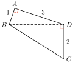
ក. គណនា \(\displaystyle BD\)
ក្នុងត្រីកោណ \(\displaystyle ABD\)
ដូចនេះ \(\displaystyle BD = \sqrt{10}\) ។
ខ. គណនា \(\displaystyle BC\)
ក្នុងត្រីកោណ \(\displaystyle DBC\)
ដូចនេះ \(\displaystyle BC = \sqrt{14}\) ឯកតាប្រវែង ។
គេឱ្យត្រីកោណ \(\displaystyle ABC\) និងត្រីកោណ \(\displaystyle ABD\) កែងត្រង់ \(\displaystyle B\) ។ ដោយស្គាល់ \(\displaystyle AB = 15\text{ cm}\), \(\displaystyle BC = 8\text{ cm}\) និង \(\displaystyle AD = 20\text{ cm}\) ។ គណនា \(\displaystyle AC\) និង \(\displaystyle BD\) ។
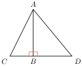
គណនា \(\displaystyle AC\)
ក្នុងត្រីកោណកែង \(\displaystyle ABC\) តាមទ្រឹស្តីបទពីតាក័រ
ដូចនេះ \(\displaystyle AC = \sqrt{289} = 17\text{ cm}\) ។
គណនា \(\displaystyle BD\)
ក្នុងត្រីកោណកែង \(\displaystyle ABD\) តាមទ្រឹស្តីបទពីតាក័រ
ដូចនេះ \(\displaystyle BD = \sqrt{175} \approx 13.23\text{ cm}\) ។
គណនារង្វាស់ \(\displaystyle x\) គិតជា \(\displaystyle \text{cm}\) នៃរូបខាងស្ដាំ ។
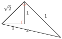
មើលដំណោះស្រាយ
ក្នុងត្រីកោណកែងទីមួយ (ខាងក្នុង) ៖ តាង \(\displaystyle y\) ជាប្រវែងអ៊ីប៉ូតេនុស ។ តាមទ្រឹស្តីបទពីតាក័រ គេបាន ៖
\[y^2 = 1^2 + 1^2 = 1 + 1 = 2 \implies y = \sqrt{2}\text{ cm}\]ក្នុងត្រីកោណកែងទីពីរ ៖ ជ្រុងជាប់មុំកែងមានរង្វាស់ \(\displaystyle y = \sqrt{2}\text{ cm}\) និង \(\displaystyle 1\text{ cm}\) ហើយអ៊ីប៉ូតេនុសមានរង្វាស់ \(\displaystyle x\) ។ តាមទ្រឹស្តីបទពីតាក័រ គេបាន ៖
\[x^2 = y^2 + 1^2 = (\sqrt{2})^2 + 1^2 = 2 + 1 = 3 \implies x = \sqrt{3}\text{ cm}\]
ដូចនេះ \(\displaystyle x = \sqrt{3}\text{ cm}\) ។
2. ច្រាសទ្រឹស្តីបទពីតាក័រ
គេសង់ត្រីកោណ \(\displaystyle ABC\) មួយដែលមានជ្រុង \(\displaystyle AB = 3\text{ cm}\), \(\displaystyle AC = 4\text{ cm}\) និង \(\displaystyle BC = 5\text{ cm}\) ។
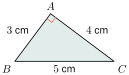
គណនា
ហើយ \(\displaystyle AB^2 + AC^2 = 3^2 + 4^2 = 25\)
គេសង្កេតឃើញថា
ការេប្រវែងជ្រុងវែងជាងគេ = ផលបូកការេប្រវែងជ្រុងពីរទៀត ។
បើគេប្រើឧបករណ៍កែងដើម្បីផ្ទៀងផ្ទាត់រង្វាស់ \(\displaystyle \angle BAC\) នោះ \(\displaystyle \angle BAC = 90^\circ\) ។
ក្នុងត្រីកោណ \(\displaystyle ABC\) មួយ ៖ បើ \(\displaystyle BC^2 = AB^2 + AC^2\) នោះ \(\displaystyle \angle BAC = 90^\circ\) ។
ក្នុងត្រីកោណមួយបើការេនៃប្រវែងជ្រុងមួយដែលវែងជាងគេ ស្មើនឹងផលបូកការេនៃប្រវែងជ្រុងពីរទៀត នោះវាជាត្រីកោណកែងដែលមានមុំកែងឈមនឹងជ្រុងដែលវែងជាងគេ ។
តើត្រីកោណមួយណាជាត្រីកោណកែង?
ចំពោះ \(\displaystyle \Delta ABC\)
គេទាញបាន \(\displaystyle BC^2 = 49 \neq AB^2 + AC^2 = 52\)
ដូចនេះ \(\displaystyle \Delta ABC\) មិនមែនត្រីកោណកែងទេ ។
ចំពោះ \(\displaystyle \Delta EFG\)
គេទាញបាន \(\displaystyle EF^2 + EG^2 = FG^2\)
ដូចនេះ \(\displaystyle \Delta EFG\) ជាត្រីកោណកែងត្រង់ \(\displaystyle E\) ។
គេឱ្យ \(\displaystyle \Delta MNP\) មានជ្រុង \(\displaystyle MN = 4\text{ cm}\), \(\displaystyle MP = 5\text{ cm}\), \(\displaystyle NP = 7\text{ cm}\) និងត្រីកោណ \(\displaystyle ABC\) មានជ្រុង \(\displaystyle AC = 12\text{ cm}\), \(\displaystyle AB = 9\text{ cm}\), \(\displaystyle BC = 15\text{ cm}\) តើត្រីកោណមួយណាជាត្រីកោណកែង?
មើលដំណោះស្រាយ
ពិនិត្យត្រីកោណ \(\displaystyle MNP\) ៖ ជ្រុងវែងជាងគេគឺ \(\displaystyle NP = 7\text{ cm}\) នាំឱ្យ \(\displaystyle NP^2 = 7^2 = 49\) ។
ផលបូកការេនៃជ្រុងពីរទៀត ៖ \(\displaystyle MN^2 + MP^2 = 4^2 + 5^2 = 16 + 25 = 41\) ។
ដោយ \(\displaystyle NP^2 \ne MN^2 + MP^2\) (\(\displaystyle 49 \ne 41\)) នោះ \(\displaystyle \Delta MNP\) មិនមែនជាត្រីកោណកែងទេ ។
ពិនិត្យត្រីកោណ \(\displaystyle ABC\) ៖ ជ្រុងវែងជាងគេគឺ \(\displaystyle BC = 15\text{ cm}\) នាំឱ្យ \(\displaystyle BC^2 = 15^2 = 225\) ។
ផលបូកការេនៃជ្រុងពីរទៀត ៖ \(\displaystyle AB^2 + AC^2 = 9^2 + 12^2 = 81 + 144 = 225\) ។
ដោយ \(\displaystyle BC^2 = AB^2 + AC^2 = 225\) តាមច្រាសនៃទ្រឹស្តីបទពីតាក័រ ត្រីកោណ \(\displaystyle ABC\) ជាត្រីកោណកែងត្រង់ \(\displaystyle A\) (អ៊ីប៉ូតេនុស \(\displaystyle BC\)) ។
ដូចនេះ ត្រីកោណ \(\displaystyle ABC\) ជាត្រីកោណកែងត្រង់ \(\displaystyle A\) ។
3. ការអនុវត្តទ្រឹស្តីបទពីតាក័រ
3.1. ការអនុវត្តដើម្បីគណនារង្វាស់ជ្រុង
គណនាអង្កត់ទ្រូងនៃការេដែលមានជ្រុង \(\displaystyle a\)
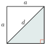
គណនាកម្ពស់នៃត្រីកោណសម័ង្ស \(\displaystyle ABC\) ដែលមានរង្វាស់ជ្រុង \(\displaystyle a\) ។ កម្ពស់ \(\displaystyle [AH]\) កាត់ \(\displaystyle BC\) ត្រង់ចំណុចកណ្ដាល \(\displaystyle H\) ដូចនេះ \(\displaystyle BH = \frac{a}{2}\) ។
ក្នុងត្រីកោណកែង \(\displaystyle ABH\)
គណនាអង្កត់ទ្រូងនៃប្រលេពីប៉ែតកែង \(\displaystyle ABCDEFGH\) ដែលមានរង្វាស់ជ្រុងរៀងគ្នា \(\displaystyle x, y, z\) ហើយ \(\displaystyle t\) ជារង្វាស់នៃអង្កត់ទ្រូង ។
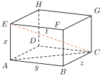
ក្នុងត្រីកោណកែង \(\displaystyle ABC\) កែងត្រង់ \(\displaystyle B\)
ក្នុងត្រីកោណកែង \(\displaystyle EAC\) កែងត្រង់ \(\displaystyle A\)
គណនាផ្ទៃក្រឡានៃត្រីកោណសម័ង្សដែលមានរង្វាស់ជ្រុងស្មើនឹង \(\displaystyle 4\text{ cm}\) ។
កម្ពស់នៃត្រីកោណសម័ង្សកំណត់ដោយ
ផ្ទៃក្រឡានៃត្រីកោណ \(\displaystyle ABC\)
អង្កត់ទ្រូងនៃការេមួយមានរង្វាស់ស្មើនឹង \(\displaystyle 6\sqrt{2}\text{ dm}\) ។ កំណត់រង្វាស់ជ្រុងនៃការេ ។
បើ \(\displaystyle a\) ជារង្វាស់ជ្រុង ហើយ \(\displaystyle d\) ជាអង្កត់ទ្រូងនោះ
គណនាអង្កត់ទ្រូងនៃប្រលេពីប៉ែតកែងដែលមានរង្វាស់ជ្រុងរៀងគ្នា \(\displaystyle 2, 3, 4\) គិតជា \(\displaystyle \text{m}\) ។
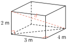
មើលដំណោះស្រាយ
តាង \(\displaystyle a = 2\text{ m}\), \(\displaystyle b = 3\text{ m}\), \(\displaystyle c = 4\text{ m}\) ជាវិមាត្រទាំងបីនៃប្រលេពីប៉ែតកែង និង \(\displaystyle d\) ជាប្រវែងអង្កត់ទ្រូង ។
តាមរូបមន្តគណនាប្រវែងអង្កត់ទ្រូងនៃប្រលេពីប៉ែតកែង ៖
នាំឱ្យ \(\displaystyle d = \sqrt{29}\text{ m} \approx 5.39\text{ m}\) ។
ដូចនេះ ប្រវែងអង្កត់ទ្រូងនៃប្រលេពីប៉ែតកែងគឺ \(\displaystyle d = \sqrt{29}\text{ m}\) ។
3.2. ការអនុវត្តក្នុងជីវភាពរស់នៅ
នៅលើទីធ្លាមួយ \(\displaystyle A\) ជាចំណុចនឹង ហើយ \(\displaystyle Ax\) ជាបន្ទាត់នឹង ។ ដើម្បីឱ្យ \(\displaystyle Ax \perp Ay\) តើគេត្រូវសង់បន្ទាត់ \(\displaystyle Ay\) យ៉ាងដូចម្ដេច?
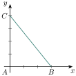
ដើម្បីឱ្យ \(\displaystyle Ax \perp Ay\) គេតែងតែប្រើទ្រឹស្តីបទពីតាក័រ ។
នៅលើបន្ទាត់ \(\displaystyle Ax\) គេដៅចំណុច \(\displaystyle B\) ដែល \(\displaystyle AB = 3\text{ dm}\) ហើយនៅលើបន្ទាត់ \(\displaystyle Ay\) គេដៅចំណុច \(\displaystyle C\) ដែល \(\displaystyle AC = 4\text{ dm}\) ។ គេរំកិលខ្សែ \(\displaystyle AC\) ដោយយ៉ាងណាឱ្យ \(\displaystyle BC = 5\text{ dm}\) ធ្វើបែបនេះ គេបាន \(\displaystyle 5^2 = 3^2 + 4^2\) មានន័យថា \(\displaystyle BC^2 = AB^2 + AC^2\) នោះ \(\displaystyle ABC\) ជាត្រីកោណកែងត្រង់ \(\displaystyle A\) ។
តើគេអាចលើកទូដែលមានកម្ពស់ \(\displaystyle 2.10\text{ m}\) និងទទឹង \(\displaystyle 0.60\text{ m}\) ឱ្យបញ្ឈរនៅទៀបត្រើយមួយ ដែលមានកម្ពស់ត្រឹម \(\displaystyle 2.16\text{ m}\) ឬទេ?
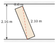
គេអាចលើកបញ្ឈរទូបានលុះត្រាតែអង្កត់ទ្រូងនៃមុខខាងមុខខ្លីជាងកម្ពស់នៃទៀបត្រើយ។ ក្នុងករណីនេះគេត្រូវគណនាអង្កត់ទ្រូងនៃទូសិន ។
បើ \(\displaystyle d\) ជាអង្កត់ទ្រូងនៃទូ
ទៀបត្រើយមានកម្ពស់ត្រឹមតែ \(\displaystyle 2.16\text{ m}\) ខ្លីជាងអង្កត់ទ្រូងនៃទូ ។
ដូចនេះគេមិនអាចលើកបញ្ឈរទូនេះបានឡើយ ។
គេយកជណ្ដើរមួយដែលមានប្រវែង \(\displaystyle 8\text{ m}\) ទៅផ្អែកនឹងជញ្ជាំងមួយ ។ បើជើងជណ្ដើរឃ្លាតពីជញ្ជាំង \(\displaystyle 2\text{ m}\) រកកម្ពស់នៃជញ្ជាំងនោះ ។
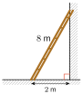
មើលដំណោះស្រាយ
តាង \(\displaystyle h\) ជាកម្ពស់នៃជញ្ជាំងដែលជណ្ដើរផ្អែកដល់ (គិតជា \(\displaystyle \text{m}\)) ។
ដោយជញ្ជាំងកែងនឹងដី បង្កើតបានជាត្រីកោណកែងមួយដែលមានអ៊ីប៉ូតេនុសជាប្រវែងជណ្ដើរស្មើ \(\displaystyle 8\text{ m}\) ជ្រុងជាប់មុំកែងមួយស្មើ \(\displaystyle 2\text{ m}\) និងកម្ពស់ជញ្ជាំង \(\displaystyle h\) ជាជ្រុងជាប់មុំកែងមួយទៀត ។
តាមទ្រឹស្តីបទពីតាក័រ គេបាន ៖
ដូចនេះ កម្ពស់នៃជញ្ជាំងនោះគឺ \(\displaystyle h = 2\sqrt{15}\text{ m}\) (ឬប្រហែល \(\displaystyle 7.75\text{ m}\)) ។
លំហាត់
គណនា \(\displaystyle x\) ក្នុងរូបខាងស្ដាំនេះ ។
មើលដំណោះស្រាយ
ក្នុងត្រីកោណកែង តាមទ្រឹស្តីបទពីតាក័រ ផលបូកការេនៃជ្រុងជាប់មុំកែងស្មើនឹងការេនៃអ៊ីប៉ូតេនុស ៖
\[x^2 + 6^2 = 10^2\]\[x^2 + 36 = 100 \implies x^2 = 100 - 36 = 64\]\[x = \sqrt{64} = 8\text{ m}\]ដូចនេះ \(\displaystyle x = 8\text{ m}\) ។
ចំពោះរង្វាស់ជ្រុងនីមួយៗខាងក្រោមនេះ តើ \(\displaystyle ABC\) ជាត្រីកោណកែងឬទេ?
- ក. \(\displaystyle AB = 7\) , \(\displaystyle BC = 9\) , \(\displaystyle AC = 12\)
- ខ. \(\displaystyle AB = 52.8\) , \(\displaystyle BC = 45.5\) , \(\displaystyle AC = 69.7\)
- គ. \(\displaystyle AB = 83\) , \(\displaystyle BC = 49\) , \(\displaystyle AC = 67\) ។
មើលដំណោះស្រាយ
ក. \(\displaystyle AB = 7, BC = 9, AC = 12\) ៖
ជ្រុងវែងជាងគេគឺ \(\displaystyle AC = 12 \implies AC^2 = 12^2 = 144\)
ផលបូកការេនៃជ្រុងពីរទៀត ៖ \(\displaystyle AB^2 + BC^2 = 7^2 + 9^2 = 49 + 81 = 130\)
ដោយ \(\displaystyle AC^2 \ne AB^2 + BC^2\) (\(\displaystyle 144 \ne 130\)) ដូចនេះ ត្រីកោណ \(\displaystyle ABC\) មិនមែនជាត្រីកោណកែងទេ ។
ខ. \(\displaystyle AB = 52.8, BC = 45.5, AC = 69.7\) ៖
ជ្រុងវែងជាងគេគឺ \(\displaystyle AC = 69.7 \implies AC^2 = 69.7^2 = 4858.09\)
ផលបូកការេនៃជ្រុងពីរទៀត ៖ \(\displaystyle AB^2 + BC^2 = 52.8^2 + 45.5^2 = 2787.84 + 2070.25 = 4858.09\)
ដោយ \(\displaystyle AC^2 = AB^2 + BC^2 = 4858.09\) តាមច្រាសនៃទ្រឹស្តីបទពីតាក័រ ៖ ត្រីកោណ \(\displaystyle ABC\) ជាត្រីកោណកែងត្រង់ \(\displaystyle B\) ។
គ. \(\displaystyle AB = 83, BC = 49, AC = 67\) ៖
ជ្រុងវែងជាងគេគឺ \(\displaystyle AB = 83 \implies AB^2 = 83^2 = 6889\)
ផលបូកការេនៃជ្រុងពីរទៀត ៖ \(\displaystyle BC^2 + AC^2 = 49^2 + 67^2 = 2401 + 4489 = 6890\)
ដោយ \(\displaystyle AB^2 \ne BC^2 + AC^2\) (\(\displaystyle 6889 \ne 6890\)) ដូចនេះ ត្រីកោណ \(\displaystyle ABC\) មិនមែនជាត្រីកោណកែងទេ ។
គណនាផ្ទៃក្រឡានៃត្រីកោណ \(\displaystyle ABC\) ។
មើលដំណោះស្រាយ
រកកម្ពស់ \(\displaystyle AD\) ៖ ក្នុងត្រីកោណកែង \(\displaystyle ABD\) កែងត្រង់ \(\displaystyle D\) តាមទ្រឹស្តីបទពីតាក័រ ៖
\[AD^2 + BD^2 = AB^2 \implies AD^2 = 15^2 - 12^2 = 225 - 144 = 81\]\[AD = \sqrt{81} = 9\text{ cm}\]រកប្រវែង \(\displaystyle DC\) ៖ ក្នុងត្រីកោណកែង \(\displaystyle ADC\) កែងត្រង់ \(\displaystyle D\) តាមទ្រឹស្តីបទពីតាក័រ ៖
\[AD^2 + DC^2 = AC^2 \implies DC^2 = 41^2 - 9^2 = 1681 - 81 = 1600\]\[DC = \sqrt{1600} = 40\text{ cm}\]រកប្រវែងបាត \(\displaystyle BC\) ៖
\[BC = BD + DC = 12 + 40 = 52\text{ cm}\]គណនាផ្ទៃក្រឡានៃត្រីកោណ \(\displaystyle ABC\) ៖
\[S = \frac{1}{2} \times BC \times AD = \frac{1}{2} \times 52 \times 9 = 26 \times 9 = 234\text{ cm}^2\]ដូចនេះ ផ្ទៃក្រឡានៃត្រីកោណ \(\displaystyle ABC\) គឺ \(\displaystyle S = 234\text{ cm}^2\) ។
រង្វង់មួយដែលមានផ្ចិត \(\displaystyle O\) និងកាំស្មើនឹង \(\displaystyle 5\text{ cm}\) \(\displaystyle [AB]\) ជាអង្កត់ធ្នូដែលមានរង្វាស់ស្មើ \(\displaystyle 8\text{ cm}\) ។ គណនាប្រវែង \(\displaystyle OM\) ។
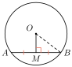
មើលដំណោះស្រាយ
ចំណុច \(\displaystyle M\) ជាចំណុចកណ្ដាលនៃអង្កត់ធ្នូ \(\displaystyle [AB]\) នាំឱ្យ \(\displaystyle OM \perp AB\) ត្រង់ \(\displaystyle M\) និង ៖
\[AM = \frac{AB}{2} = \frac{8}{2} = 4\text{ cm}\]កាំនៃរង្វង់គឺ \(\displaystyle OA = 5\text{ cm}\) ។ ក្នុងត្រីកោណកែង \(\displaystyle OMA\) កែងត្រង់ \(\displaystyle M\) តាមទ្រឹស្តីបទពីតាក័រ ៖
\[OM^2 + AM^2 = OA^2 \implies OM^2 = OA^2 - AM^2\]\[OM^2 = 5^2 - 4^2 = 25 - 16 = 9 \implies OM = \sqrt{9} = 3\text{ cm}\]ដូចនេះ \(\displaystyle OM = 3\text{ cm}\) ។
ត្រីកោណសម័ង្សមួយដែលមានកម្ពស់ស្មើនឹង \(\displaystyle \sqrt{3}\text{ cm}\) ។ គណនាផ្ទៃក្រឡានៃត្រីកោណសម័ង្សនេះ ។
មើលដំណោះស្រាយ
តាង \(\displaystyle a\) ជាប្រវែងជ្រុងនៃត្រីកោណសម័ង្ស និង \(\displaystyle h\) ជាកម្ពស់ ។
កម្ពស់ចែកជ្រុងបាតជាពីរស្មើគ្នាគឺ \(\displaystyle \frac{a}{2}\) ។ តាមទ្រឹស្តីបទពីតាក័រ ៖
\[h^2 + \left(\frac{a}{2}\right)^2 = a^2 \implies h^2 = a^2 - \frac{a^2}{4} = \frac{3a^2}{4} \implies h = \frac{a\sqrt{3}}{2}\]ដោយស្គាល់ \(\displaystyle h = \sqrt{3}\text{ cm}\) ៖
\[\frac{a\sqrt{3}}{2} = \sqrt{3} \implies a = 2\text{ cm}\]គណនាផ្ទៃក្រឡានៃត្រីកោណសម័ង្ស ៖
\[S = \frac{1}{2} \times a \times h = \frac{1}{2} \times 2 \times \sqrt{3} = \sqrt{3}\text{ cm}^2 \approx 1.732\text{ cm}^2\]ដូចនេះ ផ្ទៃក្រឡានៃត្រីកោណសម័ង្សគឺ \(\displaystyle S = \sqrt{3}\text{ cm}^2\) ។
កំណត់ \(\displaystyle x\) និង \(\displaystyle y\) នៃរូបខាងក្រោមគិតជា \(\displaystyle \text{m}\) ។
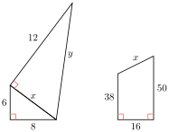
មើលដំណោះស្រាយ
រូបខាងឆ្វេង ៖
ត្រីកោណកែងទីមួយមានជ្រុងមុំកែង 8 និង 6 ៖
\[x^2 = 8^2 + 6^2 = 64 + 36 = 100 \implies x = \sqrt{100} = 10\text{ m}\]ត្រីកោណកែងទីពីរមានជ្រុងមុំកែង \(\displaystyle x = 10\) និង 12 ៖
\[y^2 = x^2 + 12^2 = 100 + 144 = 244 \implies y = \sqrt{244} = 2\sqrt{61}\text{ m} \approx 15.62\text{ m}\]
រូបខាងស្ដាំ (ចតុកោណព្នាយកែង) ៖
ចតុកោណព្នាយមានបាតក្រោម 50, បាតលើ 38 និងកម្ពស់ 16 ។ គូសកម្ពស់ពីកំពូលនៃបាតលើ គេបានត្រីកោណកែងមួយដែលមានជ្រុងមុំកែងស្មើ \(\displaystyle 16\text{ m}\) និង \(\displaystyle 50 - 38 = 12\text{ m}\) ហើយអ៊ីប៉ូតេនុសគឺ \(\displaystyle x\) ៖
\[x^2 = 16^2 + 12^2 = 256 + 144 = 400 \implies x = \sqrt{400} = 20\text{ m}\]ដូចនេះ ចំពោះរូបខាងឆ្វេង \(\displaystyle x = 10\text{ m}, y = 2\sqrt{61}\text{ m}\) និងចំពោះរូបខាងស្ដាំ \(\displaystyle x = 20\text{ m}\) ។
គណនាកម្ពស់នៃកោណនៃរូបខាងស្ដាំ រួចគណនាមាឌនៃកោណនោះ ។
មើលដំណោះស្រាយ
កាំបាតកោណ ៖ \(\displaystyle r = \frac{12}{2} = 6\text{ cm}\), ប្រវែងទ្រនុង ៖ \(\displaystyle l = 18\text{ cm}\) ។
កម្ពស់ \(\displaystyle h\) កែងនឹងបាត តាមទ្រឹស្តីបទពីតាក័រ ៖
\[h^2 + r^2 = l^2 \implies h^2 = 18^2 - 6^2 = 324 - 36 = 288\]\[h = \sqrt{288} = 12\sqrt{2}\text{ cm} \approx 16.97\text{ cm}\]គណនាមាឌនៃកោណ ៖
\[V = \frac{1}{3}\pi r^2 h = \frac{1}{3}\pi \times 6^2 \times 12\sqrt{2} = 144\pi\sqrt{2}\text{ cm}^3 \approx 640\text{ cm}^3\]ដូចនេះ កម្ពស់កោណគឺ \(\displaystyle h = 12\sqrt{2}\text{ cm}\) និងមាឌគឺ \(\displaystyle V = 144\pi\sqrt{2}\text{ cm}^3\) ។
គូបមួយមានរង្វាស់ជ្រុងស្មើនឹង \(\displaystyle 1\text{ cm}\) ។ គណនាអង្កត់ទ្រូងនៃគូបនោះ ។
មើលដំណោះស្រាយ
តាង \(\displaystyle a = 1\text{ cm}\) ជារង្វាស់ជ្រុងនៃគូប និង \(\displaystyle d\) ជាប្រវែងអង្កត់ទ្រូងនៃគូប ។
អង្កត់ទ្រូងបាតការេគឺ \(\displaystyle d_1 = \sqrt{a^2 + a^2} = \sqrt{1^2 + 1^2} = \sqrt{2}\text{ cm}\) ។
អង្កត់ទ្រូងនៃគូប \(\displaystyle d\) បង្កើតបានជាត្រីកោណកែងមួយជាមួយ \(\displaystyle d_1\) និងកម្ពស់ \(\displaystyle a\) ៖
\[d^2 = d_1^2 + a^2 = (\sqrt{2})^2 + 1^2 = 2 + 1 = 3 \implies d = \sqrt{3}\text{ cm} \approx 1.732\text{ cm}\]ដូចនេះ ប្រវែងអង្កត់ទ្រូងនៃគូបគឺ \(\displaystyle d = \sqrt{3}\text{ cm}\) ។
គេឱ្យរូបខាងស្ដាំគិតជា \(\displaystyle \text{cm}\) ។ គណនា
- ក. រង្វាស់ជ្រុង \(\displaystyle AB\)
- ខ. រង្វាស់ជ្រុង \(\displaystyle AH\)
- គ. រង្វាស់ជ្រុង \(\displaystyle BH\) និង \(\displaystyle HC\) ។
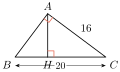
មើលដំណោះស្រាយ
ក. រង្វាស់ជ្រុង \(\displaystyle AB\) ៖
ត្រីកោណ \(\displaystyle ABC\) កែងត្រង់ \(\displaystyle A\) មាន \(\displaystyle BC = 20\text{ cm}\) និង \(\displaystyle AC = 16\text{ cm}\) ៖
\[AB^2 + AC^2 = BC^2 \implies AB^2 = 20^2 - 16^2 = 400 - 256 = 144 \implies AB = 12\text{ cm}\]ខ. រង្វាស់ជ្រុង \(\displaystyle AH\) ៖
តាមរូបមន្តផ្ទៃក្រឡាត្រីកោណ \(\displaystyle ABC\) ៖
\[\frac{1}{2} \times AB \times AC = \frac{1}{2} \times BC \times AH \implies AB \times AC = BC \times AH\]\[12 \times 16 = 20 \times AH \implies AH = \frac{192}{20} = 9.6\text{ cm}\]គ. រង្វាស់ជ្រុង \(\displaystyle BH\) និង \(\displaystyle HC\) ៖
ក្នុងត្រីកោណកែង \(\displaystyle ABH\) កែងត្រង់ \(\displaystyle H\) ៖
\[BH^2 = AB^2 - AH^2 = 12^2 - 9.6^2 = 144 - 92.16 = 51.84 \implies BH = \sqrt{51.84} = 7.2\text{ cm}\]ប្រវែង \(\displaystyle HC\) ៖
\[HC = BC - BH = 20 - 7.2 = 12.8\text{ cm}\]ដូចនេះ \(\displaystyle AB = 12\text{ cm}, AH = 9.6\text{ cm}, BH = 7.2\text{ cm}, HC = 12.8\text{ cm}\) ។
យន្តហោះពីរហោះចេញពីចំណុច \(\displaystyle O\) ដូចគ្នាតាមទិសដៅរៀងគ្នា \(\displaystyle Ox\) និង \(\displaystyle Oy\) ។ គេដឹងថាយន្តហោះទាំងពីរហោះដោយល្បឿនស្មើគ្នា ហើយហោះចេញពីចំណុច \(\displaystyle O\) នៅម៉ោងតែមួយ ។ ចូរគណនាចម្ងាយចរនៃយន្តហោះនីមួយៗ នៅពេលដែលវាឃ្លាតពីគ្នាបាន \(\displaystyle 100\text{ km}\) ។
មើលដំណោះស្រាយ
កាំរស្មី \(\displaystyle Ox \perp Oy\) (\(\displaystyle xOy = 90^\circ\)) ។ ដោយយន្តហោះទាំងពីរចេញដំណើរដំណាលគ្នា និងមានល្បឿនស្មើគ្នា នោះចម្ងាយចររបស់យន្តហោះនីមួយៗស្មើគ្នា ៖ \(\displaystyle d_1 = d_2 = d\) ។
ត្រីកោណដែលបង្កើតដោយចំណុច \(\displaystyle O\) និងទីតាំងយន្តហោះទាំងពីរ \(\displaystyle A\) និង \(\displaystyle B\) ជាត្រីកោណកែងសមបាតត្រង់ \(\displaystyle O\) ដែលមាន \(\displaystyle OA = OB = d\) និងអ៊ីប៉ូតេនុស \(\displaystyle AB = 100\text{ km}\) ៖
\[OA^2 + OB^2 = AB^2 \implies d^2 + d^2 = 100^2\]\[2d^2 = 10\,000 \implies d^2 = 5\,000\]\[d = \sqrt{5\,000} = 50\sqrt{2}\text{ km} \approx 70.71\text{ km}\]ដូចនេះ ចម្ងាយចរនៃយន្តហោះនីមួយៗគឺ \(\displaystyle d = 50\sqrt{2}\text{ km} \approx 70.71\text{ km}\) ។
ដ្យាក្រាមខាងស្ដាំមានត្រីកោណសម័ង្សបីគឺ \(\displaystyle \Delta BCR, \Delta ACQ\) និង \(\displaystyle \Delta ABP\) ត្រូវបានគូសនៅលើជ្រុងនៃត្រីកោណកែង \(\displaystyle ABC\) ដែលមុំ \(\displaystyle ACB = 90^\circ\) រកទំនាក់ទំនងរវាងផ្ទៃក្រឡានៃត្រីកោណសម័ង្សនេះ ។
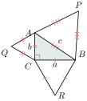
មើលដំណោះស្រាយ
តាង \(\displaystyle a = BC, b = AC, c = AB\) ជារង្វាស់ជ្រុងនៃត្រីកោណកែង \(\displaystyle ABC\) កែងត្រង់ \(\displaystyle C\) (\(\displaystyle c\) ជាអ៊ីប៉ូតេនុស) ៖
\[c^2 = a^2 + b^2\]រូបមន្តផ្ទៃក្រឡានៃត្រីកោណសម័ង្សដែលមានរង្វាស់ជ្រុង \(\displaystyle s\) គឺ \(\displaystyle S = \frac{\sqrt{3}}{4}s^2\) ៖
- ផ្ទៃក្រឡា \(\displaystyle \Delta BCR\) (ជ្រុង \(\displaystyle a\)) គឺ ៖ \(\displaystyle S_{BCR} = \frac{\sqrt{3}}{4}a^2\)
- ផ្ទៃក្រឡា \(\displaystyle \Delta ACQ\) (ជ្រុង \(\displaystyle b\)) គឺ ៖ \(\displaystyle S_{ACQ} = \frac{\sqrt{3}}{4}b^2\)
- ផ្ទៃក្រឡា \(\displaystyle \Delta ABP\) (ជ្រុង \(\displaystyle c\)) គឺ ៖ \(\displaystyle S_{ABP} = \frac{\sqrt{3}}{4}c^2\)
បូកផ្ទៃក្រឡាទាំងពីរ ៖
\[S_{BCR} + S_{ACQ} = \frac{\sqrt{3}}{4}a^2 + \frac{\sqrt{3}}{4}b^2 = \frac{\sqrt{3}}{4}(a^2 + b^2)\]ដោយ \(\displaystyle a^2 + b^2 = c^2\) នោះ ៖
\[S_{BCR} + S_{ACQ} = \frac{\sqrt{3}}{4}c^2 = S_{ABP}\]ដូចនេះ ទំនាក់ទំនងរវាងផ្ទៃក្រឡានៃត្រីកោណសម័ង្សទាំងបីគឺ ៖
\[S_{ABP} = S_{BCR} + S_{ACQ}\](ផ្ទៃក្រឡានៃត្រីកោណសម័ង្សលើអ៊ីប៉ូតេនុស ស្មើនឹងផលបូកផ្ទៃក្រឡានៃត្រីកោណសម័ង្សលើជ្រុងមុំកែងទាំងពីរ) ។
ដ្យាក្រាមមួយខាងស្ដាំបង្ហាញពីទីតាំងនៃទីក្រុងពីរ ។ ទីក្រុង \(\displaystyle A\) មានចម្ងាយ \(\displaystyle 9\text{ km}\) នៅខាងជើង និង \(\displaystyle 20\text{ km}\) នៅខាងលិចពីចំណុច \(\displaystyle O\) ។ ទីក្រុង \(\displaystyle B\) ស្ថិតនៅចម្ងាយ \(\displaystyle 21\text{ km}\) នៅខាងត្បូង និង \(\displaystyle 15\text{ km}\) នៅខាងកើតពីចំណុច \(\displaystyle O\) ។ ចូររក
- ក. ចម្ងាយ \(\displaystyle OA\)
- ខ. ចម្ងាយ \(\displaystyle OB\)
- គ. ចម្ងាយ \(\displaystyle AB\) ។
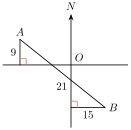
មើលដំណោះស្រាយ
កំណត់កូអរដោនេធៀបនឹង \(\displaystyle O(0, 0)\) (ទិសខាងកើត-លិចជាអ័ក្សដេក \(\displaystyle x\), ខាងជើង-ត្បូងជាអ័ក្សឈរ \(\displaystyle y\)) ៖ \(\displaystyle A(-20, 9)\) និង \(\displaystyle B(15, -21)\) ។
ក. ចម្ងាយ \(\displaystyle OA\) ៖
\[OA = \sqrt{(-20)^2 + 9^2} = \sqrt{400 + 81} = \sqrt{481}\text{ km} \approx 21.93\text{ km}\]ខ. ចម្ងាយ \(\displaystyle OB\) ៖
\[OB = \sqrt{15^2 + (-21)^2} = \sqrt{225 + 441} = \sqrt{666} = 3\sqrt{74}\text{ km} \approx 25.81\text{ km}\]គ. ចម្ងាយ \(\displaystyle AB\) ៖
\[AB = \sqrt{(15 - (-20))^2 + (-21 - 9)^2} = \sqrt{35^2 + (-30)^2} = \sqrt{1225 + 900} = \sqrt{2125}\]\[AB = \sqrt{25 \times 85} = 5\sqrt{85}\text{ km} \approx 46.10\text{ km}\]ដូចនេះ
- ក. \(\displaystyle OA = \sqrt{481}\text{ km} \approx 21.93\text{ km}\)
- ខ. \(\displaystyle OB = 3\sqrt{74}\text{ km} \approx 25.81\text{ km}\)
- គ. \(\displaystyle AB = 5\sqrt{85}\text{ km} \approx 46.10\text{ km}\) ។
ខ្លឹមសារ៖ សៀវភៅពុម្ពគណិតវិទ្យាថ្នាក់ទី៨ របស់ក្រសួងអប់រំ យុវជន និងកីឡា · វាយអត្ថបទ គូររូបភាពឡើងវិញ និងរៀបចំលើអនឡាញដោយលោកគ្រូ សាន សុខលី សម្រាប់ការសិក្សាដោយឥតគិតថ្លៃ និងមិនរកប្រាក់ចំណេញ។ មិនមែនជាការបោះពុម្ពផ្លូវការរបស់ក្រសួងទេ។